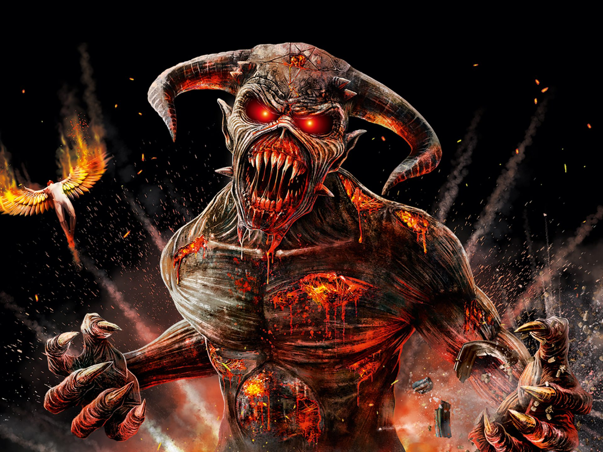

Mötley Crüe
Mötley Crüe es una banda estadounidense de Heavy metal/Glam metal formada en Los Ángeles, California, en 1981 por el bajista Nikki Sixx y el baterista Tommy Lee a los que más tarde se les unirían el guitarrista Mick Mars y el vocalista Vince Neil. Con 25 millones de copias vendidas sólo en Estados Unidos34 y más de 100 millones53467 en todo el mundo, es considerada como una de las bandas más importantes de la escena «glam» tanto en los años 1980 como en la actualidad y como una de las más influyentes en la escena mundial. La formación de la banda ha tenido varios cambios durante su carrera. Vince Neil salió en 1992 y fue reemplazado por John Corabi, aunque volvió en 1997. Tommy Lee salió en 1999 y fue reemplazado por Randy Castillo, quien murió en 2002 y fue sustituido por Samantha Maloney hasta 2004, cuando volvió Tommy Lee. Solo grabaron dos álbumes en que faltara alguno de los miembros originales. La banda tuvo un gran éxito en la década de 1980 por ser uno de los exponentes más grandes del glam metal3 ya que ayudó mucho en la popularidad de ese género con sus dos primeros álbumes Too Fast for Love de 19818 y Shout at the Devil de 1983.39 Destacaron con canciones como «Shout at the Devil», «Home Sweet Home», «Girls, Girls, Girls», «Smokin' in the Boys Room», «Too Young to Fall in Love», «Wild Side», «Kickstart My Heart» y «Dr. Feelgood», entre otras. Los álbumes más exitosos de Mötley Crüe fueron durante la década de 1980, en la cual se convirtieron en una de las bandas más grandes del género del heavy metal, ya que en esta misma década fue cuando se desató el glam metal o hair metal, al que Mötley Crüe contribuyó con los antes ya mencionados Too Fast for Love (1981),810 Shout at the Devil (1983),910 Theatre of Pain (1985)10 y Girls, Girls, Girls (1987).10 Esto los convirtió en una de las bandas más populares de glam metal en los años 80.111012 En 1989, después de haber entrado en rehabilitación y estar sobrios, publicaron su álbum Dr. Feelgood, su único álbum número 1 y el más exitoso de la banda hasta la fecha. El 14 de octubre de ese año Dr. Feelgood se convirtió en su único álbum No. 1, y se mantuvo en el Top 100 de Billboard por 109 semanas después de su lanzamiento.111013 Con Dr. Feelgood la banda fue nominada a dos American Music Awards en la categoría de «Mejor álbum de heavy metal/hard rock», una vez fue en 1990 y otra en 1991, donde solamente ganaron en 1991. Gracias a este álbum Mötley Crüe ganó su primer premio. En toda su carrera, la banda ha sido nominada varias veces en los American Music Awards, Grammy Awards y MTV Video Music Awards, siendo esta la única vez en la que ganaron. En los años 1990, la popularidad de la banda comenzó a bajar y también la del glam metal, por la popularidad del nuevo género que estaba surgiendo en ese entonces, el «Grunge».14 El vocalista Vince Neil anunció que dejaba la banda. Nikki Sixx dice que Vince renunció, mientras que Vince dice que fue despedido. La banda lanzó el álbum Mötley Crüe (1994), el cual fue el primer y único álbum de la banda con el vocalista John Corabi. Este álbum en comparación con los que habían lanzado antes fue un fracaso comercial, al igual que su siguiente álbum, Generation Swine (1997).10 En el año 2000, la banda lanzó New Tattoo, álbum en el que no participaba el baterista original Tommy Lee, ya que un año antes había dejado la banda para desarrollar una carrera como solista, por lo que fue reemplazado por Randy Castillo (quien tocó con Ozzy Osbourne). En este álbum la banda mostró de nuevo el sonido glam que les otorgó gran éxito comercial en los 80s. En el año 2006, Mötley Crüe fue introducido en el Paseo de la Fama de Hollywood. En la actualidad los miembros de la banda son más conocidos por sus duros estilos de vida en los que viven. Todos los integrantes han tenido numerosos y diferentes problemas con la ley, han pasado un tiempo en la cárcel, sufren de alcoholismo, grandes adicciones a las drogas, han estado en sinnúmero de aventuras amorososas y poseen muchísimos tatuajes. Su noveno álbum de estudio, Saints of Los Angeles, fue lanzado el 24 de junio de 2008, en este álbum participa la formación original de la banda.15 Actualmente están escribiendo nuevo material para su próximo álbum.16 El canal VH1 los clasificó en el puesto #29 en su lista «VH1's 100 Greatest Artists of Hard Rock» (Los 100 más grandes artistas del hard rock),1718 y también MTV los clasificó en el puesto #10 en su lista «The Greatest Metal Bands of all Time» (Las bandas de metal más grandes de todos los tiempos).19 A inicios de 2014 la banda firmó un pacto en el cual establece su separación de una manera pacífica, por lo que cada integrante señala que "todo debe de llegar a su fin". Esto permitirá a cada miembro dedicarse a sus proyectos como solistas, en este caso Nikki Sixx a su proyecto homónimo Sixx:A.M., Tommy Lee con otros proyectos alternos y Mick Mars podrá descansar debido a sus problemas de salud. Vince Neil señaló que extrañará muchísimo los conciertos con el grupo pero que individualmente no será su fin como músico en la carrera del rock. Tommy Lee agregó que la banda nunca tocará en ferias o cantinas si no en buenos escenarios por lo tanto su trabajo había terminado, Mick Mars remató humorísticamente diciendo que en 33 años de carrera con la banda tuvieron más dramas que en la telenovela General Hospital. Además, la banda realizó una gira mundial que terminó a fines de 2015 y contó con la presentación especial de Alice Cooper, Lucifer's Friend. Y han sacado un nuevo sencillo, "All Bad Thing", que se supone por muchos fan debe ser un adelanto de un nuevo disco. |
|||
 |
|||
|  | |||